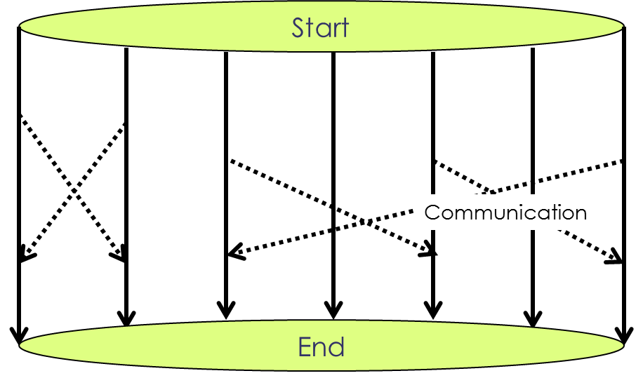

Parallel Computing
Clusters and Message Passing
Learning Objectives
- Use a library function to get a list of filenames that match a simple wildcard pattern.
- Use a for loop to process multiple files.
If a computational problem is very large, the limitations of shared-memory machines (not to mention the price tag on the big ones) become an issue. The largest shared memory machines have less than 1000 cores or CPUs, and if that’s not enough, we have to use a cluster. Since clusters are essentially many individual machines connected via a communication system, the communication is a crucial part of the code. This has to be done explicitly, because it is too complicated for automatic compilation or even compiler directives.
The structure of a program that is designed for a cluster resembles the simultaneous independent run of the same code on multiple computers with an added communication between these processes (“Message Passing”):

The standard API that is used to establish communication is called MPI (Message Passing Interface). It’s a set of about 200 routines that are used to make processes that run on different CPU’s “talk with each other”. There are interfaces for Fortran, C, and C++, and some kind soul has provided some of the interfaces (you guessed it) for Python. But well get back to that later.
Unlike shared-memory programs, MPI programs have to be started “from the outside”. Since each of the multiple processes are full-fledged standalone program runs, we can’t just type the program name as we did in the case of a multithreaded application. Instead we are using a “runtime environment” that starts the individual processes on the proper hardware and establishes the communication paths. Most of the time the command that starts this runtime environment is called mpirun.
Let’s try this out. In the same rootsum directory that we used in the last segment, there is another program called MPIrootsum.exe. This thing does the same “sum of square roots” computation as the OMProotsum.exe we used before. Got into the directory and start it as follows:
$ mpirun -np 2 ./MPIrootsum.x How many terms?1234567890 RANK: 0 MYS= 14459431279586.3 M: 1234567890
RANK: 1 MYS= 14459431262016.8 M: 1234567890
Total sum: 28918862541603.1
Total time on rank 0: 2.98754600000000The -np 2 option to the mpirun command tells the system to start 2 processes, in other words, run the program twice. In our case we don’t really have a cluster that we run this on. Instead we are running it on the same hardware we ran the shred-memory program on before. But that’s OK, because you can run MPI programs on almost anything. As long as teach of the program runs can go to different CPUs (i.e. as long as you’re using a parallel computer of some type), it will benefit from the hardware. In this particular case, we have each of the program runs compute only the sum of half of the square roots, and then one process communicates its result to the other and the other (“rank 0”) sums up the two partial sums. Each prints out their intermediate result and one of them shows the total. Also printed out is the time requirements of one of them - we’re assuming the other is not far behind. Let’s see how long it takes to do it with only one:
$ mpirun -np 1 ./rootsum.x < rootsum.in
How many terms?
RANK: 0 MYS= 28918862541603.5 M: 1234567890
Total sum: 28918862541603.5
Total time on rank 0: 5.85311000000000Sure enough, almost twice as long. There are of course some losses. In practice, most of the issues one encounters with MPI programs and lack of scaling are due to communication. As mentioned before that is the bottle neck.